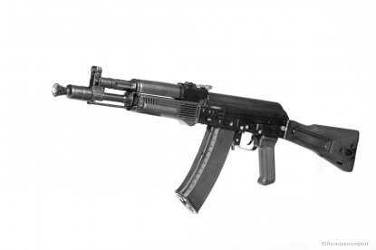
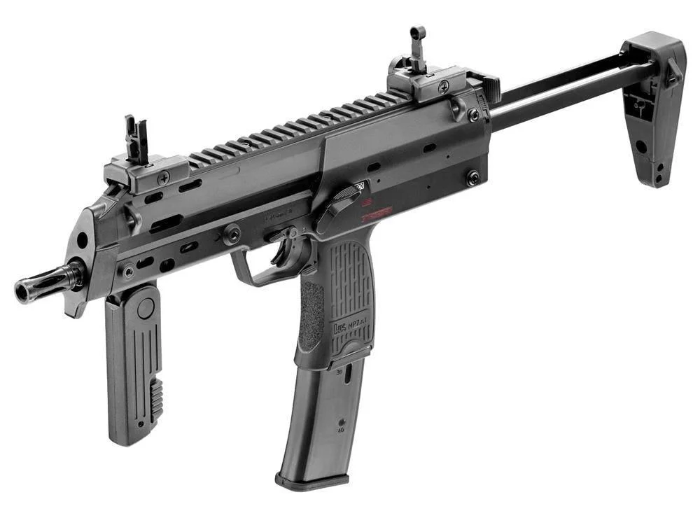
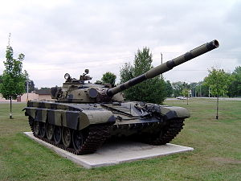
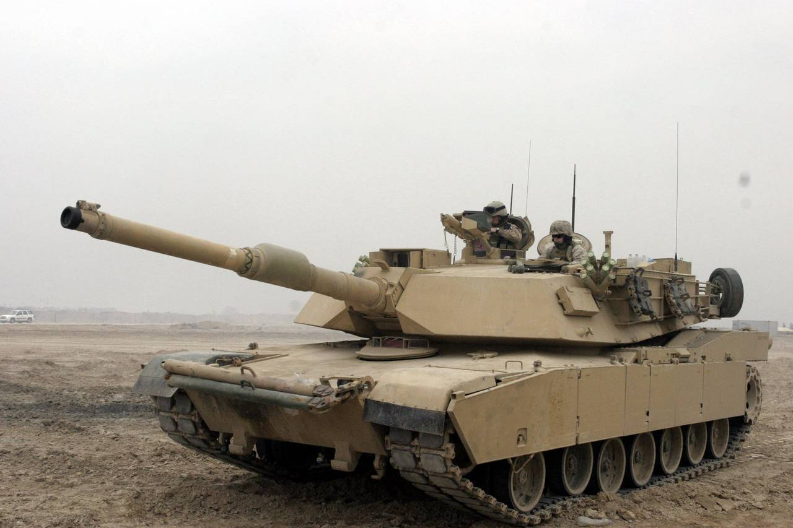

АК-105 (индекс ГРАУ — 6П47) — автомат Калашникова «сотой серии» малогабаритный. Разработан под патрон 5,45х39 мм для армии и правоохранительных органов. Внешним отличием от автомата АК74М является укороченный ствол и появление пламегасителя. Заменяет устаревший в армии советский автомат АКС-74У.
АК-105 снабжен боковой планкой для установки оптического или коллиматорного прицела, а также глушителем, лазерным целеуказателем. Наличие складывающегося приклада обеспечивает удобство обращения с оружием при передвижении на марше, транспортировке и десантировании, при этом имеется возможность ведения стрельбы со сложенным прикладом.
В конструкции применены современные материалы. Приклад, магазин, цевье, ствольная накладка и пистолетная рукоятка изготовлены из пластмассы и обладают высокой ударопрочностью и стойкостью к внешним воздействиям. Применение защитных покрытий обеспечивает высокую коррозийную стойкость металлических деталей.
5,45 мм автомат Калашникова АК-105 – идеальный выбор для тех, кому нужна высокая мобильность и эргономичность. Широкая номенклатура боеприпасов 5,45х39 мм позволяет стрелку подобрать конкретный патрон под конкретные задачи. Солдат может поражать живую силу противника, не покидая технику и транспортные средства.
Heckler & Koch MP7 A1 PDW — пистолет-пулемёт, разработанный в начале 2000-х годов немецкой фирмой Heckler & Koch. По классификации НАТО отнесён к новому классу огнестрельного оружия — персональному оружию самообороны (англ. Personal Defence Weapon, PDW).
MP7 — автоматическое оружие под специально разработанный для него патрон 4,6×30 мм. MP7 скомпонован по типу небольшого пистолета-пулемёта, магазин вставляется в пистолетную рукоятку, приклад складной, телескопический, спереди имеется складная дополнительная рукоять.
Автоматика MP7 построена по схеме с газовым двигателем с коротким ходом газового поршня, запирание осуществляется поворотом затвора. В конструкции используются некоторые особенности автомата HK G36, например широкое использование полимерных материалов, сходная автоматика и конструкция УСМ.
Масса пули — 1,6 г. Пуля цельностальная, в медной оболочке. По кучности стрельбы оружие превосходит многие другие пистолеты-пулемёты таких же размеров. По статистике, приводимой фирмой H&K, эффективность MP7 в два с половиной раза выше, чем у MP5K калибра 9×19 мм по целям в бронежилетах при вдвое меньшей отдаче.
Основной боевой танк Т-72 - наиболее массовый и известный советский танк последней четверти XX века. Создан на базе танка Т-64А с использованием ходовой части опытного танка объект «167». Разрабатывался в КБ «Уралвагонзавода» № 183 под руководством Л. Н. Карцева с 1967 по 1972 год в рамках программы создания так называемого «мобилизационного варианта» танка Т-64А на военный период.
Самый массовый танк второго поколения. Принят на вооружение в Вооружённых Силах СССР с 1973 года. «Урал» состоит на вооружении стран СНГ, экспортировался в государства Варшавского договора, Финляндию, Индию, Иран, Ирак, Сирию. Модификации Т-72 выпускались по лицензии в Югославии (M-84), Польше (PT-91), Чехословакии и Индии, которые их экспортировали.
Специально созданное для танка Т-64 дизельное производство (Харьковский завод) обладало мощностью для обеспечения двигателями серийного выпуска боевых машин на трех заводах – Харьковском, Кировском и «Уралвагонзаводе», но только в мирное время. В случае же необходимости резкого увеличения выпуска танков в предвоенный и военный периоды харьковчане смогли бы поставлять двигатели только в Ленинград, а «Уралвагонзавду» пришлось бы в этом случае ставить на танки дизель иного типа. Поэтому, руководство Миноборонпрома приняло решение о подготовке дополнительного варианта перспективного танка с челябинским четырехтактным V-образным дизелем В-45, хорошо освоенного в производстве, и к тому же простого и дешевого в изготовлении. Поэтому в КБ «Уралвагонзавода» решили использовать конструкции ходовой части и моторно-трансмиссионного отделения их «объекта 167», созданного на основе работ по перспективному среднему танку.
M1 Abrams — основной боевой танк США, серийно выпускается с 1980 года. Стоит на вооружении армии и морской пехоты США, а также вооружённых сил Египта, Австралии, Марокко и ряда ближневосточных государств. Назван в честь генерала Крейтона Абрамса. М1 «Абрамс» в настоящее время является одним из наиболее тяжёлых танков, его боевая масса превысила 62 т. Положил начало использованию целого ряда новаторских решений, включая компьютерную систему управления огнём и раздельное хранение боезапаса с использованием вышибных панелей.
Разработка нового танка, получившего позднее обозначение XM-1, началась сразу после закрытия программы ХМ802 в конце 1971 года. Для снижения технологических рисков было принято решение проектировать новый танк по классической схеме с экипажем из 4 человек и с пушкой высокой баллистики в качестве основного вооружения. На роль последней рассматривались нарезная 105-мм пушка M68, британская нарезная 110-мм и немецкая 120-мм гладкоствольная пушка. 110-мм пушку отвергли сразу же, как не имеющую существенного превосходства над 105-мм. Вариант с пушкой калибром 120 мм посчитали рискованным, поэтому было решено оставить пушку М68 с возможностью последующей замены на 120-мм.
В качестве силовой установки рассматривались американский дизель воздушного охлаждения AVCR-1100 (планировался для MBT-70), немецкий дизель водяного охлаждения DB1500 (позднее получил обозначение MB873) и американский газотурбинный двигатель (ГТД) AGT-1500. Мощность всех двигателей составляла 1500 л. с. Первоначально военные отдавали предпочтение дизелю, но в конце 1970-х годов их симпатии сместились в сторону ГТД.